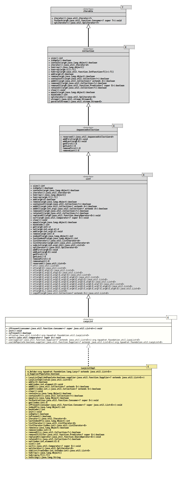

- Type Parameters:
E- The type of elements in this list.
- All Superinterfaces:
Collection<E>,Iterable<E>,List<E>,SequencedCollection<E>
- All Known Implementing Classes:
LazyListImpl
@ClassVersion(sourceVersion="$Id: LazyList.java 1032 2022-04-10 17:27:44Z tquadrat $")
@API(status=STABLE,
since="0.0.5")
public sealed interface LazyList<E>
extends List<E>
permits LazyListImpl<E>
The interface for a
List
that will be initialised only when required.- Note:
-
- There is no implementation of a
map()method in this interface because it is assumed that this would be confusing: such amap()method would operate on the whole list that is wrapped by this value, and not on an entry as one would expect. Refer to .
- There is no implementation of a
- Author:
- Thomas Thrien (thomas.thrien@tquadrat.org)
- Version:
- $Id: LazyList.java 1032 2022-04-10 17:27:44Z tquadrat $
- Since:
- 0.0.5
- See Also:
- UML Diagram
-

UML Diagram for "org.tquadrat.foundation.util.LazyList"
{kind=link}
-
Method Summary
Modifier and TypeMethodDescriptionvoidIf thisLazyListinstance has been initialised already, the providedConsumerwill be executed; otherwise nothing happens.voidinit()Forces the initialisation of thisLazyListinstance.booleanChecks whether thisLazyListinstance has been initialised already.static <E> LazyList<E> Creates a newLazyListinstance that is already initialised.voidsort(Comparator<? super E> c) static <E> LazyList<E> Creates a newLazyListinstance that uses the given supplier to initialise.static <E> LazyList<E> Creates a newLazyListinstance that uses the given supplier to create the internal map, but that supplier does not provide values on initialisation.Methods inherited from interface java.util.Collection
parallelStream, removeIf, stream, toArrayMethods inherited from interface java.util.List
add, add, addAll, addAll, addFirst, addLast, clear, contains, containsAll, equals, get, getFirst, getLast, hashCode, indexOf, isEmpty, iterator, lastIndexOf, listIterator, listIterator, remove, remove, removeAll, removeFirst, removeLast, replaceAll, retainAll, reversed, set, size, spliterator, subList, toArray, toArray
-
Method Details
-
ifPresent
If thisLazyListinstance has been initialised already, the providedConsumerwill be executed; otherwise nothing happens.- Parameters:
consumer- The consumer.
-
init
void init()Forces the initialisation of thisLazyListinstance. -
isPresent
boolean isPresent()Checks whether thisLazyListinstance has been initialised already.- Returns:
trueif the instance was initialised,falseotherwise.
-
of
Creates a newLazyListinstance that is already initialised.- Type Parameters:
E- The type of elements in this list.- Parameters:
value- The value.- Returns:
- The new instance.
-
sort
-
use
Creates a newLazyListinstance that uses the given supplier to create the internal map, but that supplier does not provide values on initialisation.- Type Parameters:
E- The type of elements in this list.- Parameters:
supplier- The supplier that initialises for the new instance ofLazyListwhen needed.- Returns:
- The new instance.
-
use
@API(status=STABLE, since="0.0.5") static <E> LazyList<E> use(boolean doPopulate, Supplier<? extends List<E>> supplier) Creates a newLazyListinstance that uses the given supplier to initialise.- Type Parameters:
E- The type of elements in this list.- Parameters:
doPopulate-trueif the provided supplier will put entries to the list on initialisation,falseif it will create an empty list.supplier- The supplier that initialises for the new instance ofLazyListwhen needed.- Returns:
- The new instance.
-